Software PHC
Implementação de soluções PHC, adaptadas às necessidades da sua empresa.
- PHC Advanced
- PHC Corporate
- PHC Enterprise
- Módulos especializados
Especializados em soluções PHC para o mercado empresarial.

Somos uma empresa especializada em soluções de software para o mercado empresarial, com foco em implementações PHC.
Desde o nosso início que o objetivo é fornecer soluções tecnológicas que ajudam as empresas a otimizar os seus processos e a aumentar a produtividade.
Trabalhamos em software PHC, desenvolvimento à medida, consultoria de TI e fornecimento de hardware empresarial.
Uma gama completa de serviços de TI para empresas de todas as dimensões.
Implementação de soluções PHC, adaptadas às necessidades da sua empresa.
Otimização de processos e implementação de tecnologia com quem conhece o terreno.
Aplicações e integrações personalizadas para as necessidades do seu negócio.
Suporte especializado para garantir o funcionamento contínuo dos seus sistemas.
Fale connosco e descubra como podemos ajudar a sua empresa a crescer.
Contactar agoraEstamos prontos para ajudar a sua empresa.
Rua Pedro Álvares Cabral, n.º 24, 3.º E
2670-391 Loures, Portugal
+351 210 170 577
Chamada para a rede fixa nacional
Segunda a sexta: 9h – 18h
Suporte técnico 24/7 para clientes enterprise